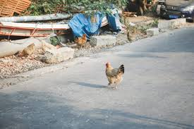
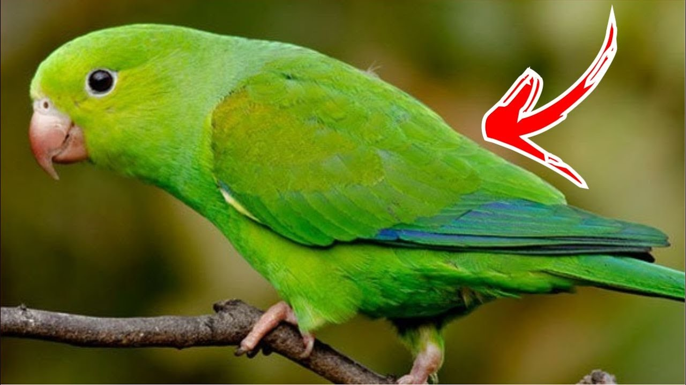

coisas que aconteseram com a cidade rio dos pobres fique ligando com as coisas que acomteceram!!!
noticia 1
um gato foi visto andando de skate na praça central da cidade, atraindo a atenção de moradores e
turistas. O felino parecia bastante habilidoso, realizando manobras impressionantes enquanto
deslizava pelas calçadas. Vídeos do gato skatista rapidamente viralizaram nas redes sociais,
tornando-o uma celebridade local as pessoas dizem que isso nao e possivel como .
noticia do gato
o chacorro que viu o gato andando de skate ficou muito triste e com inveja do gato, ele tentou
aprender a andar de
skate mas nao conseguiu, o chacorro acabou desistindo e foi brincar com uma bola. os moradores da
cidade ficaram com pena do chacorro e decidiram comprar um skate para ele e ele commeçou trenar
trenar mais e mais como gato disse mais proficinal mais facil cao virou ativersario do gato as
pessoas com pouco de medo pq ne .
noticias dos pombos
coias estranhas estao acontecendo na cidade, um grupo de pombos foi visto organizando reuniões
secretas
em parques locais. Testemunhas relataram que os pombos pareciam estar discutindo algo importante,
voando em círculos e emitindo sons incomuns. Alguns moradores acreditam que os pombos estão
planejando algo grande, enquanto outros acham que é apenas um comportamento natural da espécie.
Autoridades locais estão monitorando a situação de perto para garantir a segurança da comunidade
.
noticia do rato
um rato foi visto roubando pedaços de queijo de uma loja local durante a noite. O pequeno
ladrão
parecia bastante astuto, conseguindo escapar das armadilhas colocadas pelos donos da loja.
Câmeras de segurança capturaram imagens do rato em ação, mostrando sua habilidade em se
esgueirar pelas prateleiras e levar o queijo para fora do estabelecimento. Os proprietários da
loja estão considerando aumentar as medidas de segurança para evitar futuros roubos pelo rato
faminto .
noticia do pombo
Um pombo foi flagrado furtando salgadinhos em uma mercearia no centro da cidade, agindo com a frieza de um
verdadeiro profissional do crime. Segundo as câmeras de segurança, o pombo entrou pela porta automática
“como quem não quer nada”, caminhou calmamente até o corredor de snacks e fisgou um pacote de torcida sabor
churrasco.
Testemunhas afirmam que o pombo não demonstrou nenhum arrependimento. Pelo contrário — ainda parou na porta,
olhou para trás e soltou um “gru gru” que alguns clientes interpretaram como uma risada debochada.
Os funcionários tentaram perseguir o criminoso, mas o pombo simplesmente abriu as asas e decolou, levando o
pacote intacto. Especialistas acreditam que o pássaro pode fazer parte de uma quadrilha maior, composta por
pombos treinados para assaltos leves.
A mercearia estuda instalar espantalhos estilizados como seguranças armados, na esperança de intimidar o
animal delinquente. Enquanto isso, o pombo permanece foragido — e provavelmente desfrutando de um
churrasquinho crocante em algum telhado próximo.
noticia da galinha
uma galinha foi vista atravessando a rua em um cruzamento movimentado da cidade, desafiando o trânsito
caótico
e surpreendendo os motoristas. A ave parecia determinada a chegar ao outro lado, caminhando com confiança
enquanto os carros buzinavam ao seu redor. Alguns motoristas pararam para observar a cena inusitada,
enquanto
outros tentaram desviar para evitar atropelar a galinha. Felizmente, a ave conseguiu atravessar a rua em
segurança, tornando-se uma sensação local e inspirando memes nas redes sociais sobre sua coragem e
determinação.

piriquito que queria canta mais sla
um periquito foi visto tentando cantar em um karaokê local, mas sua performance deixou muito a desejar. O
pássaro parecia entusiasmado, subindo no palco e tentando imitar as melodias que ouvia, mas sua voz
estridente e desafinada causou risos entre o público. Apesar das tentativas do periquito de se destacar,
ele acabou sendo gentilmente convidado a deixar o palco pelos organizadores do evento. No entanto, o
incidente se tornou viral nas redes sociais, com muitos usuários elogiando a coragem do periquito em
enfrentar o desafio, mesmo sem talento musical.

noticia passaro que queria voa
um pássaro foi visto tentando voar em um parque local, mas suas tentativas desajeitadas chamaram a
atenção dos visitantes. O pássaro parecia determinado a levantar voo, batendo as asas com força e
correndo pelo chão, mas não conseguia ganhar altura. Algumas pessoas se aproximaram para observar o
esforço do pássaro, oferecendo palavras de encorajamento. Apesar das dificuldades, o pássaro continuou
tentando, inspirando os espectadores com sua perseverança. Eventualmente, o pássaro conseguiu dar alguns
voos curtos antes de pousar novamente, deixando todos impressionados com sua determinação em alcançar o
céu.
noticia de pobres que queria rouba maquita
um grupo de moradores de uma comunidade carente foi flagrado tentando roubar uma máquina de café de um
estabelecimento local. Segundo testemunhas, os indivíduos entraram no local durante a madrugada e
tentaram levar a máquina, mas foram surpreendidos pelo sistema de segurança do estabelecimento. A polícia
foi acionada e os suspeitos foram detidos no local. Durante o interrogatório, eles alegaram que a
intenção era apenas conseguir café para suas famílias, já que muitos enfrentam dificuldades financeiras.
O caso gerou debate na comunidade sobre a necessidade de apoio social e programas de assistência para
pessoas em situação de vulnerabilidade.
noticia dos velhos caiudo no buranco
um grupo de idosos foi visto caindo em um buraco aberto na calçada de uma praça pública. Segundo relatos,
os idosos estavam caminhando juntos quando não perceberam o buraco e acabaram tropeçando e caindo dentro
dele. Felizmente, os velhos caiu em qual bure de batata niguem ficou gravemente ferido, mas alguns tiveram
arranhões e contusões leves. Testemunhas
chamaram os serviços de emergência, que rapidamente chegaram ao local para prestar socorro aos idosos.
O incidente levantou preocupações sobre a manutenção das calçadas e a segurança dos espaços públicos para
pessoas idosas prefeito disse que nao vai arruma os burancos.


 Large button
Large button